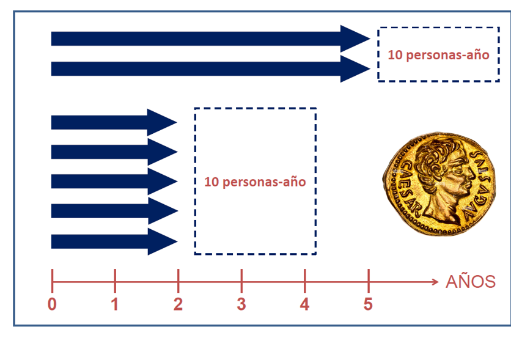

Antes de comparar grupos necesitamos saber contar bien: ¿cuántos pacientes tienen la condición?, ¿cuántos la desarrollan?, ¿con qué rapidez? Las medidas de frecuencia responden estas tres preguntas.
Nota🩺 En la consulta de nefrología
Imagina que revisas el registro de tu servicio:
“¿Cuántos pacientes de mi clínica de ERC tienen anemia hoy?” → prevalencia.
“De los que hoy no tienen anemia, ¿cuántos la desarrollarán en 3 años?” → incidencia acumulada (riesgo).
“¿A qué velocidad aparece la anemia en mi cohorte, si unos se siguen 2 años y otros 7?” → tasa de incidencia.
Importante🎯 En resumen
Medida
Qué cuenta
Denominador
¿Incluye tiempo?
Rango
Prevalencia
Casos existentes (nuevos y antiguos)
Personas observadas en el momento de corte
No
0–1 (o %)
Incidencia acumulada (riesgo)
Casos nuevos en un periodo
Personas en riesgo al inicio
Solo como “ventana” fija
0–1 (o %)
Tasa de incidencia
Casos nuevos
Persona-tiempo en riesgo
Sí
0–∞ (casos por 100 persona-años)
Tip💡 Tip práctico: proporción vs. razón vs. tasa
Proporción: el numerador está dentro del denominador (prevalencia, incidencia acumulada). Va de 0 a 1.
Razón: compara dos cantidades que pueden ser independientes (p. ej., 2 hombres por cada mujer).
Tasa: tiene tiempo en el denominador (casos por persona-año). Es la única que admite seguimientos de distinta duración.
Ojo: en el lenguaje clínico se dice “tasa de mortalidad” o “tasa de prevalencia” para proporciones. Pregúntate siempre: ¿el denominador lleva tiempo?
Un ejemplo con diez pacientes
Para ver los conceptos, usaremos una cohorte pequeña e hipotética de 10 pacientes con ERC avanzada seguidos en nefrología. Cada barra es el seguimiento de un paciente. El punto rojo marca el inicio de anemia (Hb < 10 g/dL), que una vez aparece persiste; el triángulo negro marca fallecimiento.
Ese día había 7 pacientes bajo observación y 2 tenían anemia: prevalencia = 28.6%. Fíjate que los pacientes fallecidos o que ya salieron del estudio (P1, P3, P5) no entran al denominador.
Advertencia⚠️ Cuidado
La prevalencia mezcla cuántos se enferman con cuánto dura la enfermedad. Una condición crónica que no mata (hipertensión arterial) tiene prevalencia alta aunque su incidencia sea baja.
En estudios transversales la prevalencia es lo que se puede medir. No permite hablar de “riesgo” porque no sabemos qué ocurrió primero.
Prevalencia con datos reales (código para tus análisis)
Con una base de datos propia, la prevalencia y su intervalo de confianza se obtienen en pocas líneas. Usaremos la base simulada de pacientes con ERC y diabetes (ckd_isglt2.csv, descrita en el Capítulo 3.2):
ckd<-read_csv("Bases/ckd_isglt2.csv", show_col_types =FALSE)# Prevalencia de albuminuria severa (UACR >= 300 mg/g) con IC 95 %n_total<-nrow(ckd)n_alb<-sum(ckd$uacr>=300)binom.test(n_alb, n_total)|># IC exacto (Clopper-Pearson)broom::tidy()|>select(prevalencia =estimate, ic_inferior =conf.low, ic_superior =conf.high)
count() + mutate(n / sum(n)) es la receta mínima para cualquier tabla de frecuencias. Para IC de una proporción usa binom.test() (exacto) o prop.test() (aproximado).
Incidencia acumulada (riesgo)
Definición. Proporción de personas inicialmente libres de la condición que la desarrollan durante un periodo de seguimiento. Es una probabilidad (riesgo medio del grupo).
\[
\text{Incidencia acumulada} = \frac{\text{Casos nuevos en el periodo}}{\text{Personas en riesgo al inicio}} \times 100
\]
Pregunta: tomando como inicio el 30 de junio de 2018 (2018.5), ¿cuál es el riesgo de desarrollar anemia en los siguientes 3 años?
indice<-2018.5fin<-indice+3cohorte<-seguimiento|>filter(entrada<=indice, salida>indice, # bajo observación al iniciois.na(anemia_inicio)|anemia_inicio>indice)# libres de anemia al inicioinc_acum<-cohorte|>summarise( en_riesgo =n(), casos =sum(!is.na(anemia_inicio)&anemia_inicio<=fin), riesgo =casos/en_riesgo)inc_acum
Hay 5 pacientes en riesgo; 3 desarrollan anemia en 3 años: incidencia acumulada a 3 años = 60%.
Advertencia⚠️ Cuidado
Para que esta fórmula sea válida todos deben completar el seguimiento o presentar el evento. Si hay pérdidas o fallecimientos antes del final, el denominador es engañoso: usa tasas de incidencia o curvas de Kaplan-Meier (capítulos de supervivencia).
Tasa de incidencia
Definición. Número de casos nuevos por unidad de persona-tiempo en riesgo. Describe la velocidad de aparición y permite que cada paciente aporte un seguimiento distinto.
\[
\text{Tasa de incidencia} = \frac{\text{Casos nuevos}}{\text{Persona-tiempo en riesgo}}
\]
NotaCómo se cuenta la persona-tiempo
Cada paciente aporta tiempo desde que entra en riesgo hasta que ocurre el evento, fallece o sale del seguimiento; lo que ocurra primero.
Quien ya tiene la condición al inicio (P5) no aporta persona-tiempo, porque ya no está en riesgo de un primer episodio.
Después del evento ya no se cuenta tiempo en riesgo (P1 deja de aportar en 2018).
1 persona-año = 1 persona seguida 1 año = 2 personas seguidas 6 meses cada una.

Dos formas de acumular 10 persona-años: 2 personas seguidas 5 años, o 5 personas seguidas 2 años.
Antes de calcular, define quién está en riesgo y desde cuándo: la mayoría de errores vienen de un denominador mal definido.
Referencias
Zafra-Tanaka JH, Taype-Rondan A, Fernandez-Guzman D. Cómo entender las medidas de efecto en la investigación clínica: Interpretación práctica y aplicación. Revista del Cuerpo Médico Hospital Nacional Almanzor Aguinaga Asenjo. 2023;16. https://cmhnaaa.org.pe/ojs/index.php/rcmhnaaa/article/view/1935
Hernán MA, Robins JM. Causal Inference: What If. Chapman & Hall/CRC; 2020.
Nota editorial
Esta sección fue editada con asistencia de IA (ChatGPT; revisión editorial con Claude). Los datos son simulados.